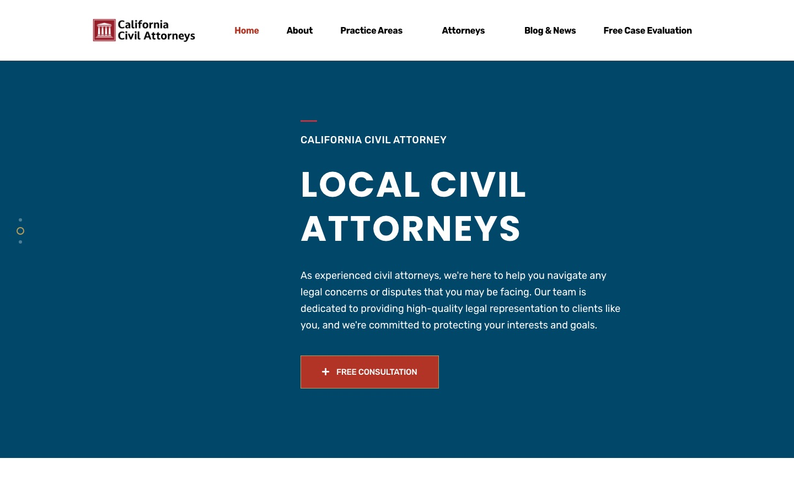
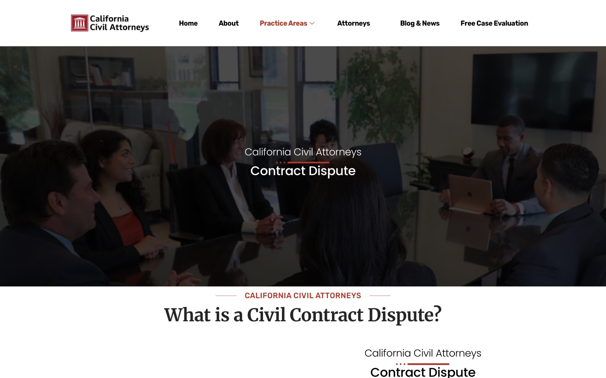

Case study · Law firms
California Civil Attorneys: service-page SEO for a civil litigation site
A civil litigation WordPress site with six service pages, attorney profiles and a large blog: what is in place, and what an audit found.
At a glance
- Who it's for
- A civil litigation practice that wants people with a contract, business, real estate or lawsuit problem to reach the right page and ask for a free case evaluation.
- Core stack
- WordPress 6.2.14, Elementor 3.12.1, All in One SEO Pro 4.5.3.1, Gravity Forms, MonsterInsights
- What sets it apart
- Six service pages built from one layout, each with its own definition, process and FAQ, backed by a 291-post blog and a single free case evaluation form.
The live site
The homepage and one service page, captured in October 2026. Each opens the live page.


The challenge
Civil litigation is a broad label. Someone with a broken contract, a partner dispute or a lawsuit served on them rarely searches for “civil litigation”; they search for the specific problem. A civil practice needs a page for each of those problems, not one general home page.
The site also has to show who the attorneys are, make the next step obvious, and stop a large blog from pulling the site away from the matters it actually handles.
What is built
The site gives each practice topic its own URL under /service/: contract disputes, business litigation, real estate disputes, start a lawsuit, defend from a lawsuit and restraining order. All six share one layout, so each reads the same way: a definition of the matter, a “Why Choose Us?” block, a process section, the attorneys involved and an FAQ.
Attorney profiles live under /team/, a free case evaluation page holds the intake form, and a blog under /category/legal/ carries explanatory posts. A phone number and “Schedule your Free Case Evaluation” prompts repeat down the pages.
Key pages and structure
Read from the public pages and the XML sitemaps. The page sitemap lists 13 pages and the services sitemap lists the six service URLs.
- 01
Contract disputes
Opens with the H2 (second-level heading) “What is a Civil Contract Dispute?”, then a case evaluation prompt, a “Why Choose Us?” block, a process section, the attorneys and an FAQ.
Page title: Contract disputes - California Civil Attorneys
- 02
Business litigation
Opens with the H2 “What is Business Litigation?”, then a case evaluation prompt, a “Why Choose Us?” block, a process section, the attorneys and an FAQ.
Page title: Business Litigation - California Civil Attorneys
- 03
Real estate disputes
Opens with the H2 “What is a Real Estate Dispute?”, then a case evaluation prompt, a “Why Choose Us?” block, a process section, the attorneys and an FAQ.
Page title: Real estate disputes - California Civil Attorneys
- 04
Start a lawsuit
Opens with the H2 “What Is Starting A Lawsuit?”, then a case evaluation prompt, a “Why Choose Us?” block, a process section, the attorneys and an FAQ.
Page title: Start A Lawsuit - California Civil Attorneys
- 05
Defend from a lawsuit
Opens with the H2 “What is Defending From A Lawsuit?”, then a case evaluation prompt, a “Why Choose Us?” block, a process section, the attorneys and an FAQ.
Page title: Defend From A Lawsuit - California Civil Attorneys
- 06
Restraining order
Opens with the H2 “What Is A Civil Restraining order?”, then a case evaluation prompt, a “Why Choose Us?” block, a process section, the attorneys and an FAQ.
Page title: Restraining Order - California Civil Attorneys
- 07
Attorneys and profiles
The attorneys page links 10 profiles under /team/, and the team sitemap lists 22 URLs. The homepage shows four (Amiel Wade, Evan Livingstone, Stephen Sayad and Victor A. Bullock). Profile pages list education and experience; Amiel Wade's also lists admissions and awards.
Schema: Person, WebPage, BreadcrumbList
- 08
Free case evaluation
A Gravity Forms intake with first and last name, email, phone, zip code and a case type list, plus a call prompt at +1 (866) 503-5682.
Tracking: GA4 through MonsterInsights; a script rewrites call buttons when the URL carries a utm_medium value
- 09
Blog and news
291 posts in the post sitemap, many titled “How courts resolve ...”, with three 2023 posts featured on the homepage.
Schema: BlogPosting
Technical SEO baseline
What is in place on the live site, confirmed in the page source, robots.txt (the file that tells search engines which areas to skip), sitemaps and response headers.
- Six service pages/service/ slugs, one layout
- AIOSEO metadataself-referencing canonicals, OG tags
- Structured dataOrganization, WebSite, Person, BlogPosting
- Sitemaps and robotssitemap index, /wp-admin/ blocked
- Case evaluation formGravity Forms, GA4 tracking
- Every page fetched returns a canonical tag (a tag that tells search engines which address is the main one) that points to itself, a robots meta (a tag that tells search engines how to treat the page) of
max-image-preview:largeand Open Graph and Twitter card tags (tags that control how a link previews when shared). - robots.txt blocks only
/wp-admin/(allowing admin-ajax.php) and listssitemap.xmlandsitemap.rss. The sitemap index includes posts, pages, services, teams, cases, categories and Elementor template types. - http requests are redirected with a 301.
Audit findings
Reviewed from public pages in October 2026. Where the site still has room to improve.
Heading structure
The homepage renders three H1 elements (main page headings that search engines read: “Award Winning Attorneys”, “Local Civil Attorneys” and “285 Years Of Combined Experience”), none of which names the practice or California. The six service pages, the attorney pages, the case-evaluation page and the blog posts checked render no H1 in the source; the page names sit in H2 elements. One descriptive H1 per page is commonly recommended.
Meta descriptions
All six service pages carry the same description, “The demand and appetite improve meats in technology is only”, which reads as leftover template copy. The practice areas page description is the page's scraped body text and includes that same placeholder phrase. The homepage description is the page's opening copy run together (“California Civil Attorney Award Winning Attorneys If you're facing a civil legal dispute...”). A written description per page would replace both.
Title tags
The homepage title is “Home - California Civil Attorneys”. Service titles follow the pattern “Contract disputes - California Civil Attorneys”, which names the topic but not the intent or a location, and the homepage title spends its first word on “Home”.
Structured data type
Service pages emit JSON-LD (structured data that describes the page to search engines) of types WebPage, Person, Organization, WebSite and BreadcrumbList. No Service or LegalService type was found on them. Blog posts emit BlogPosting. A service-level type with the firm's name, phone and area served is commonly recommended for practice pages.
Image alt text
On the homepage 9 of 18 images have no alt text, and each of the six service pages has 6 of 12 without it. The two attorney profiles checked have 7 of 9 without it. Descriptive alt text on team photos and section graphics is commonly recommended.
Footer and freshness signals
The footer reads “©2023” while the blog lists posts dated through October 2026, and the homepage blog block still shows three 2023 posts.
Blog volume and topical fit
The post sitemap lists 291 URLs: 61 dated 2023, 11 from 2024, 42 from 2025 and 177 from 2026, including a run of near-daily posts in October 2026. Many fit a civil litigation site (partition by sale, arbitration awards, security deposits, stock purchase agreements). Others sit closer to probate or family law: “How Courts Resolve Trust Decanting Disputes” (13 October), “How Courts Resolve Probate Creditor Claims” (15 October) and posts on custody and divorce. “How Courts Evaluate Prescriptive Easement Claims” (14 October) is a real property topic that fits the real estate service page. One 2023 post, “Wade Law Group Reviews”, is about another firm brand. Linking each post to the matching service page, and leaving probate and family topics to the other sites that cover them, is commonly recommended to keep topical focus.
Case-evaluation options
The form's case type list includes Fraud, Partnership disputes, Business dissolutions, Undue influence and Landlord towards tenant disputes, but also Criminal Defense, Police Brutality, False Imprisonment, CPS Case and Medical or Mal Practice. The site has no service pages for those, so the form asks for case types the site does not describe.
Pages in the sitemap
The page sitemap lists thank-you-for-booking, not-viable, faq, case-study and case-study-single. They carry no noindex tag (an instruction telling search engines to leave a page out of results; only max-image-preview:large). Their titles (“Not Viable”, “Case study single”, “Faq”) look like utility or template pages; their content was not reviewed. Whether they should be indexed could not be confirmed.
Team navigation
The homepage shows four attorneys, while the attorneys page links 10 profiles and does not list Stephen Sayad. The header menu links three profiles (Amiel Wade, Victor A. Bullock, Evan Livingstone) and omits Stephen Sayad, though his page exists at /team/stephen-sayad/ and is linked from the homepage.
Caching, runtime and cookies
HTML is sent with cache-control no-store, no-cache, must-revalidate, and the homepage sets a PHPSESSID cookie. The server reports PHP/7.4.33, which has reached end of life, with WordPress 6.2.14 and Elementor 3.12.1, both older releases. Page caching and updates are commonly recommended for speed and security.
Trust claims
“Award Winning Attorneys”, “285 Years Of Combined Experience” and “Civil Law Firm of the Year in California” appear without an issuer or date on the pages reviewed. Naming the source of each is commonly recommended.
Technology stack
Taken from the page source and response headers.
- Platform
- WordPress 6.2.14
- Elementor 3.12.1
- ElementsKit Lite
- Exclusive Addons
- Theme: privsa
- SEO
- All in One SEO Pro 4.5.3.1
- JSON-LD schema
- XML sitemaps
- Leads and analytics
- Gravity Forms
- MonsterInsights
- Google Analytics 4
- Click-to-call
- Hosting
- Apache
- PHP 7.4.33
Business value
What the setup enables. No ranking or traffic numbers are claimed.
- Gives each civil matter type its own page, so a visitor with a specific problem lands on a page about it.
- Provides canonicals, schema and sitemaps that search engines can read without extra work.
- Repeats prompts toward a free case evaluation form (the hero button reads Free Consultation, the navigation link reads Free Case Evaluation) and a phone number.
- Turns a public-page audit into a short, ordered fix list: headings, descriptions, alt text, caching and a tighter blog.
Part of the same site network
Four related California legal sites, each described in its own case study.
- 01
Legal Cali
Multi-practice firm site covering family, probate, business and real estate litigation.
- 02
Awarded Attorneys
Civil litigation brand that shares design patterns with this site.
- 03
Wade Litigation
Founder-led firm site with city and county location pages.
- 04
California Probate Attorneys
Probate-only site: trust disputes, contested wills and estate litigation.
Need SEO and WordPress work like this?
Tell us what the site needs to do and we will scope it with you on a call.